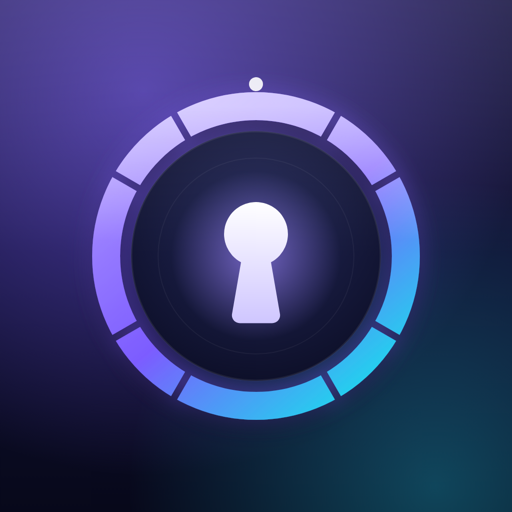

Offline VaultSupport
Questions, bug reports or feature requests: email vikashyadavarya07@gmail.com. I usually reply within two working days.
Common questions
I forgot my PIN. Your PIN never leaves your phone, so it can't be reset from a server. If you turned on biometric unlock, use Face ID, Touch ID or your fingerprint to get in, then set a new PIN in Settings → Change PIN. Otherwise, email me and I'll help.
How do I move my vault to a new phone? In Settings, tap Export backup and save the zip somewhere you trust. On the new phone, install Offline Vault and tap Settings → Restore from backup.
Does the app upload my documents? No. The app has no internet access; see the privacy policy.